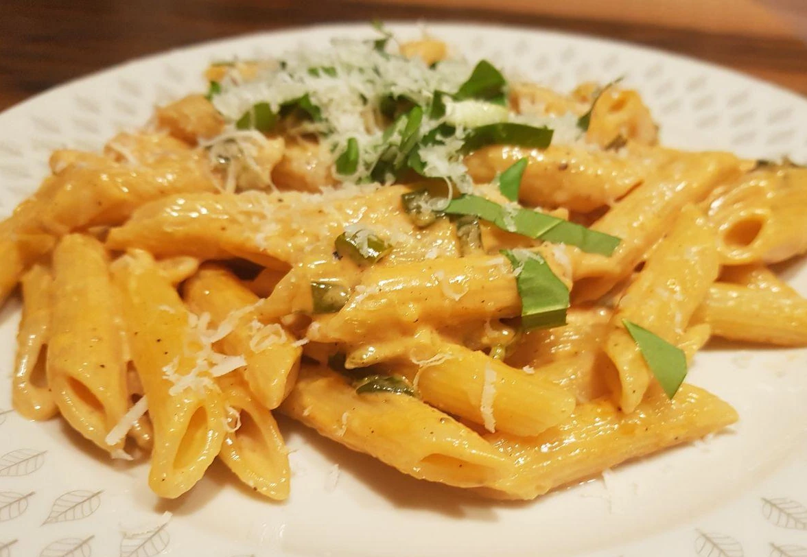

Cinque Pi

This is a nice simple dish made up of five ingredients: panna, pomodori, parmigiano, pepe, e prezzemolo
- ⏲️ Prep time: 15 min
- 🍳 Cook time: 15 min
- 🍽️ Servings: 4
Ingredients
- pasta: 800g | 1 ½ lb
- Cream: 4dl | 1 ½ cups
- Tomato purée
- Parmigiano (grated)
- Parsley
Directions
- Start cooking the pasta.
- Mix the cream with the purée and bring to a boil.
- Turn the heat down to medium and add the grated parmigiano.
- Let it cook on medium to low heat until the pasta are done.
- Add chopped up parsley and pepper.
- You can either add the sauce to the pasta ore serve separately.
- Serve with some additional parmigiano and a leaf of parsley.
Contribution
- Elias Pahls - contact